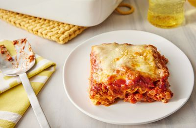

Layer Slayer: The Ultimate Lasagna Recipe

Get ready to conquer the dinner table with this lasagna that's stacked with flavor, cheesy perfection, and just the right amount of sass. One bite, and you’ll know why this dish is the undisputed ruler of comfort food!
Lasagna is the ultimate comfort food, and this recipe takes it to the next level with layers of perfectly seasoned meat sauce, velvety ricotta, and gooey melted cheese. Every bite is a harmonious blend of rich flavors, making it the star of any dinner table. Whether you're cooking for a family gathering, a date night, or meal prepping for the week, this lasagna promises to deliver a taste of home with every slice. The secret lies in the balance between the hearty marinara, the creamy layers, and the golden, bubbly topping that’s impossible to resist.
What makes this recipe stand out is its versatility and simplicity. You can customize it to fit your preferences—swap in vegetables for a lighter take, use gluten-free noodles, or add a spicy kick for extra pizzazz. The step-by-step instructions ensure you’ll nail it on your first try, even if you’re not a seasoned chef. Serve it fresh out of the oven with a crisp side salad and some garlic bread, and watch as this lasagna turns an ordinary meal into an extraordinary feast.
Ingredients
- 1 tablespoon olive oil
- 1 pound ground beef or Italian sausage
- 1 medium onion, finely chopped
- 3 garlic cloves, minced
- 1 (28-ounce) can crushed tomatoes
- 1 (6-ounce) can tomato paste
- 1 teaspoon dried basil
- 1 teaspoon dried oregano
- 1 tablespoon maple syrup
- (Optional) 1/2 teaspoon red pepper flakes
- Salt and pepper, to taste
- 1 (15-ounce) container ricotta cheese
- 1 egg, lightly beaten
- 1/2 cup grated Parmesan cheese
- 1 teaspoon dried parsley
- (Optional) Pinch of nutmeg
- 12 lasagna noodles (regular or oven-ready)
- 2 cups shredded mozzarella cheese
- 1/2 cup grated Parmesan cheese (for topping)
- (Optional) Fresh basil leaves, for garnish
- 1 cup spinach or sautéed vegetables (for a veggie twist)
- 1/2 cup red wine (to deglaze the pan for the meat sauce)
Steps
- Cook the Meat Sauce:
Heat olive oil in a large skillet over medium heat. Add ground beef (or sausage) and cook until browned, breaking it up as it cooks. Add onion and garlic, cooking until softened. Stir in crushed tomatoes, tomato paste, basil, oregano, maple syrup, red pepper flakes, salt, and pepper. Simmer for 20 minutes, stirring occasionally.
- Prepare the Ricotta Mixture:
In a medium bowl, combine ricotta cheese, beaten egg, Parmesan, parsley, and a pinch of nutmeg (if using). Mix until smooth and set aside.
- Cook the Lasagna Noodles:
If using regular lasagna noodles, boil them in salted water according to package instructions. Drain and lay flat on a baking sheet to prevent sticking. Skip this step if using oven-ready noodles.
- Preheat the Oven:
Set your oven to 375°F (190°C) and lightly grease a 9x13-inch baking dish.
- Assemble the Lasagna:
Spread a thin layer of meat sauce on the bottom of the dish. Layer with noodles, then add 1/3 of the ricotta mixture, 1/3 of the meat sauce, and 1/3 of the shredded mozzarella. Repeat layers until all ingredients are used, finishing with a generous layer of mozzarella and Parmesan on top.
- Bake:
Cover the dish with foil (to prevent sticking, spray the foil with cooking spray first). Bake for 25 minutes.
- Uncover and Finish Baking:
Remove the foil and bake for an additional 15-20 minutes, or until the cheese is golden and bubbly.
- Rest:
Let the lasagna rest for 10-15 minutes before slicing to allow the layers to set.
- Garnish and Serve:
Garnish with fresh basil leaves, if desired. Serve hot with a side of garlic bread or salad.
- Enjoy:
Dig in and savor the perfect bite of layered lasagna goodness!